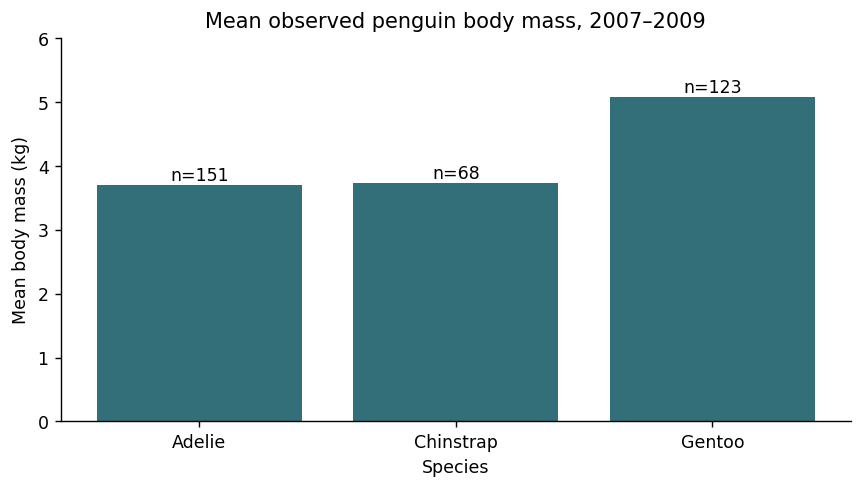

Each run starts with fresh data. Download any exported files before another run. Your written answers and code drafts are saved on this device; export your work to keep a backup.
M29C01 · Explore · predict · practice
Check the source and audit missingness
Begin a public-data analysis by identifying the source, version, and field definitions. A checksum can confirm that the local source file matches the recorded bytes, while a missingness audit tells you what is available to analyze. These checks do not prove that every scientific measurement is correct.
Dataset: Palmer Penguins, simplified penguins table
Source commit: 8957207b78d6ccd1b4654a9dd9c9041b657478ab
Shape: (344, 8)
Missing Known
species 0 344
island 0 344
bill_length_mm 2 342
bill_depth_mm 2 342
flipper_length_mm 2 342
body_mass_g 2 342
sex 11 333
year 0 344
Watch for this. A row position is a way to trace the source file, not an animal identifier.
Your turn
Read the source into df. Store a dictionary named result with keys total_rows, rows_with_any_missing, complete_rows, and rows_with_known_mass. Calculate those four counts across the source fields without deleting rows from df.
For the code check, keep these result variable names: df, result. Different valid approaches are welcome.
Show a hint
Use isna().any(axis=1), dropna() only for counting, and body_mass_g.notna().sum().
Show one worked solution
df = pd.read_csv(DATA_DIR / "public" / "penguins.csv", na_values=["NA"])
result = {
"total_rows": len(df),
"rows_with_any_missing": int(df.isna().any(axis=1).sum()),
"complete_rows": len(df.dropna()),
"rows_with_known_mass": int(df["body_mass_g"].notna().sum()),
}
print(result)
print("The original DataFrame still has", len(df), "rows.")
There are 344 rows, 11 with at least one missing field, 333 complete rows, and 342 with known body mass. Complete-case filtering would discard nine additional known body masses because another field is missing.
Compare your explanations
Read. The local file has the exact bytes recorded in the provenance manifest, assuming the manifest itself is trusted.
Predict. sex has 11 missing entries, compared with two missing body masses.
Explain. A file can be an exact copy and still contain measurement limitations, sampling constraints, or source errors.
One quick check
Which statement is justified by a matching recorded checksum?
What you should be able to explain. Document source identity and data availability before reporting results.
M29C02 · Explore · predict · practice
Choose exclusions to match the question
A body-mass summary needs a known body mass and a grouping label. It does not automatically need recorded sex. Keep an exclusion audit and retain original units; this exercise does not replace missing measurements with invented values.
Rows retained: 342
Excluded rows:
source_row species body_mass_g
3 4 Adelie NaN
271 272 Gentoo NaN
Retained rows with unrecorded sex: 9
Watch for this. Report exclusions and consider whether the remaining observations differ systematically; these checks do not establish random missingness.
Your turn
Change the question to body-mass summaries by species and sex. Require species, sex, and body_mass_g. Recreate the retained result and exclusion audit from the original file; do not reuse the earlier filtered table.
For the code check, keep these result variable names: audit, result. Different valid approaches are welcome.
Show a hint
Add sex to required and rebuild the missing-required mask.
The revised question retains 333 records and excludes 11. The decision changed because the requested grouping now needs sex; it is not a rule that every analysis must use complete cases.
Compare your explanations
Read. species and body_mass_g.
Predict. No. Nine retained rows have a known mass but missing sex.
Explain. It traces a record to its one-based position in the source table. It is not a biological identity or a repeated-measurement ID.
One quick check
Why keep some rows with missing sex for the original mass-by-species question?
What you should be able to explain. Define the required fields and preserve an exclusion audit.
M29C03 · Explore · predict · practice
Report group means with their denominators
A group mean uses the known measurements in that group. Show total observations, known measurements, and missing measurements beside the mean so readers can see its denominator. The summaries describe these observations; they do not establish causal species or island effects.
species Observations Known_mass Mean_mass_g Missing_mass
0 Adelie 152 151 3700.66 1
1 Chinstrap 68 68 3733.09 0
2 Gentoo 124 123 5076.02 1
Total observed records: 344
Total known body masses: 342
Watch for this. Sample sizes and species composition differ across islands. A descriptive comparison is not an adjusted causal analysis.
Your turn
Group by island instead of species. Store result with island as a normal column, sorted in ascending island order, and report Observations, Known_mass, Missing_mass, and Mean_mass_g. Reconcile the total observations and known measurements with the full table.
For the code check, keep these result variable names: result. Different valid approaches are welcome.
Show a hint
Change the grouping key and keep the matching size/count denominators.
Biscoe has 168 observations and 167 known masses; Dream has 124 and 124; Torgersen has 52 and 51. Their mean masses are approximately 4,716.02 g, 3,712.90 g, and 3,706.37 g. Different species composition is one reason to avoid interpreting these as an isolated island effect.
Compare your explanations
Read. 151 known body masses, not all 152 Adelie observations.
Predict. Chinstrap: all 68 observations have known body mass.
Explain. No. They are descriptive summaries; causal explanations require an appropriate design and relevant evidence.
One quick check
What should accompany a mean when values are missing?
What you should be able to explain. Pair every summary with its relevant count and interpretation.
M29C04 · Explore · predict · practice
Create a chart and an auditable export
Combine the source, missingness policy, grouped summary, chart, and export into one repeatable cell. Keep counts in the exported table and label the plotted units. A chart can summarize the sampled measurements without claiming a population estimate or a causal finding.
Read the example
df = pd.read_csv(DATA_DIR / "public" / "penguins.csv", na_values=["NA"])
result = df.groupby("species", as_index=False).agg(Observations=("species", "size"), Known_mass=("body_mass_g", "count"), Mean_mass_g=("body_mass_g", "mean"))
result["Missing_mass"] = result["Observations"] - result["Known_mass"]
result["Mean_mass_kg"] = result["Mean_mass_g"] / 1000
fig, ax = plt.subplots(figsize=(7, 4))
ax.bar(result["species"], result["Mean_mass_kg"], color="#326f79")
for i, row in result.iterrows():
ax.text(i, row["Mean_mass_kg"] + 0.08, f"n={int(row['Known_mass'])}", ha="center")
ax.set(title="Mean observed penguin body mass, 2007–2009", xlabel="Species", ylabel="Mean body mass (kg)", ylim=(0, 6))
fig.tight_layout()
csv_path = OUTPUT_DIR / "public_penguins_mass_summary.csv"
plot_path = OUTPUT_DIR / "public_penguins_mass_summary.png"
result.to_csv(csv_path, index=False)
fig.savefig(plot_path, dpi=160)
print(result.round({"Mean_mass_g": 2, "Mean_mass_kg": 3}))
print("Source: Palmer Penguins; DOI 10.5281/zenodo.3960218. Means use known body masses.")
print("These summaries describe sampled observations, not causal effects or a population census.")
plt.show()
Verified example output · pandas 2.2.3
species Observations Known_mass Mean_mass_g Missing_mass Mean_mass_kg
0 Adelie 152 151 3700.66 1 3.701
1 Chinstrap 68 68 3733.09 0 3.733
2 Gentoo 124 123 5076.02 1 5.076
Source: Palmer Penguins; DOI 10.5281/zenodo.3960218. Means use known body masses.
These summaries describe sampled observations, not causal effects or a population census.

Watch for this. Do not imply uncertainty intervals or representativeness that the chart has not calculated or established.
Your turn
Build result as a summary by species in ascending species order, with columns species, Observations, Known_length, Median_flipper_mm, and Missing_length. Plot the medians with known-count labels on axes named ax, using the y-axis label "Median flipper length (mm)". Set csv_path and plot_path to public_penguins_flipper_summary.csv and public_penguins_flipper_summary.png in OUTPUT_DIR, then export the table and chart.
For the code check, keep these result variable names: ax, csv_path, plot_path, result. Different valid approaches are welcome.
Show a hint
Change the measurement, summary method, labels, and filenames together; do not reuse the mass units.
Show one worked solution
df = pd.read_csv(DATA_DIR / "public" / "penguins.csv", na_values=["NA"])
result = df.groupby("species", as_index=False).agg(Observations=("species", "size"), Known_length=("flipper_length_mm", "count"), Median_flipper_mm=("flipper_length_mm", "median"))
result["Missing_length"] = result["Observations"] - result["Known_length"]
fig, ax = plt.subplots(figsize=(7, 4))
ax.bar(result["species"], result["Median_flipper_mm"], color="#326f79")
for i, row in result.iterrows():
ax.text(i, row["Median_flipper_mm"] + 3, f"n={int(row['Known_length'])}", ha="center")
ax.set(title="Median observed penguin flipper length, 2007–2009", xlabel="Species", ylabel="Median flipper length (mm)", ylim=(0, 250))
fig.tight_layout()
csv_path = OUTPUT_DIR / "public_penguins_flipper_summary.csv"
plot_path = OUTPUT_DIR / "public_penguins_flipper_summary.png"
result.to_csv(csv_path, index=False)
fig.savefig(plot_path, dpi=160)
print(result)
print("Source: Palmer Penguins; DOI 10.5281/zenodo.3960218. Medians use known lengths.")
print("The chart describes the available study observations; it is not a causal analysis.")
plt.show()
The median flipper lengths are 190 mm for Adelie, 196 mm for Chinstrap, and 216 mm for Gentoo, based on 151, 68, and 123 known measurements. The table and chart use the same units and denominators.
Compare your explanations
Read. The known body masses used to calculate that species mean.
Predict. No. Every mean is divided by the same positive factor of 1,000.
Explain. They preserve the analysis denominator and make it easier to audit how the result was calculated.
One quick check
Which label correctly describes the plotted output?
What you should be able to explain. Deliver the result with its source, units, counts, and limits.